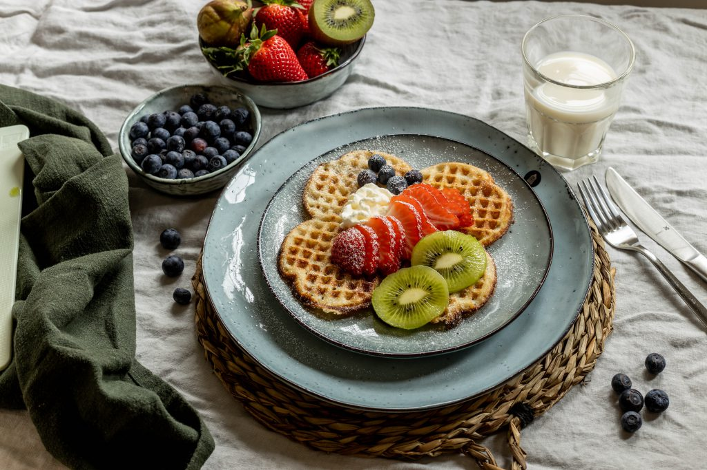

Delicious Waffles
| Ingredients: | Amount: |
|---|---|
| Butter | 125 g |
| Milk | 2 dl |
| Wheat Flour | 4 dl |
| Eggs | 2 |
| Salt | 1 pinch |
| Water | 2 dl |
Traditional Swedish Waffles (With a Norwegian Twist!)
Våfflor (waffles) are extremely popular in Sweden. Indeed, Swedes have been eating våfflor since at least the early 1600s! Originally Swedish waffles were square, but now they are usually made into heart shapes and served with jam or fruit and whipped cream or ice cream. Unlike Belgium waffles, Swedish waffles are made without yeast and so they are thinner and have a texture which is more like pancakes.
Instructions:
- Melt the butter in a microwave or a saucepan, but don't let it brown. Leave it to cool slightly.
- Whip the cream until it forms soft peaks.
- Fold in the flour, baking powder and salt.
- Add the cold sparkling water and then finally the melted butter. Mix to produce an even batter.
- Preheat your waffle iron. (Usually there is a pilot light which will go out when the waffle iron is up to temperature.)
- Pour about 4-6 tablespoons of batter on the middle of the lower plate and close the lid. Press the lid for a few seconds so that the batter is spread evenly. (Do not press during the whole process as this will prevent the waffle from rising.)
- Cook in the waffle iron until the vapor stops.
- As garnish you can have some sliced fresh fruits or if you want to try the norwegian twist you can cut slices of Ekte Geitost and serve with your waffle.
- Enjoy!